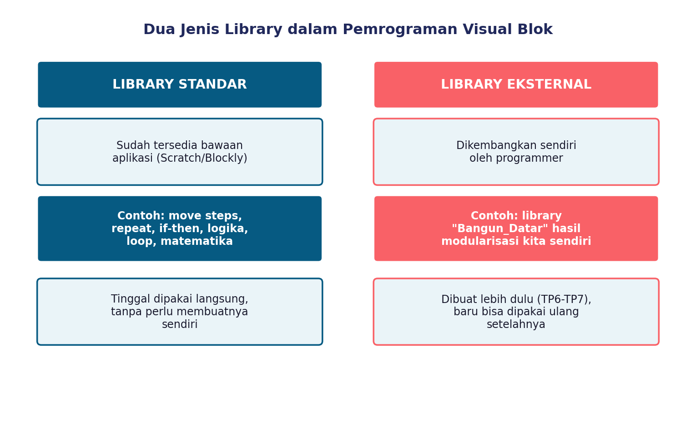
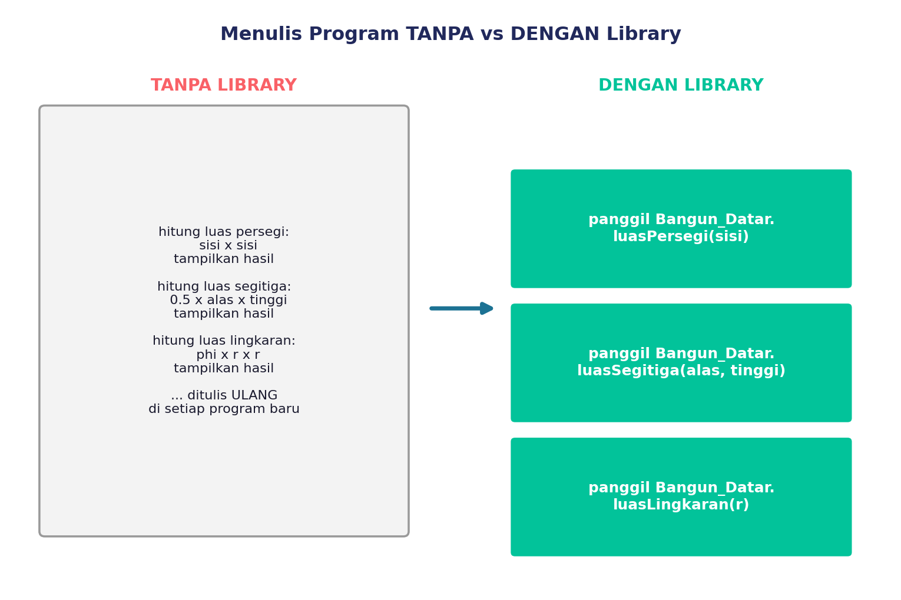
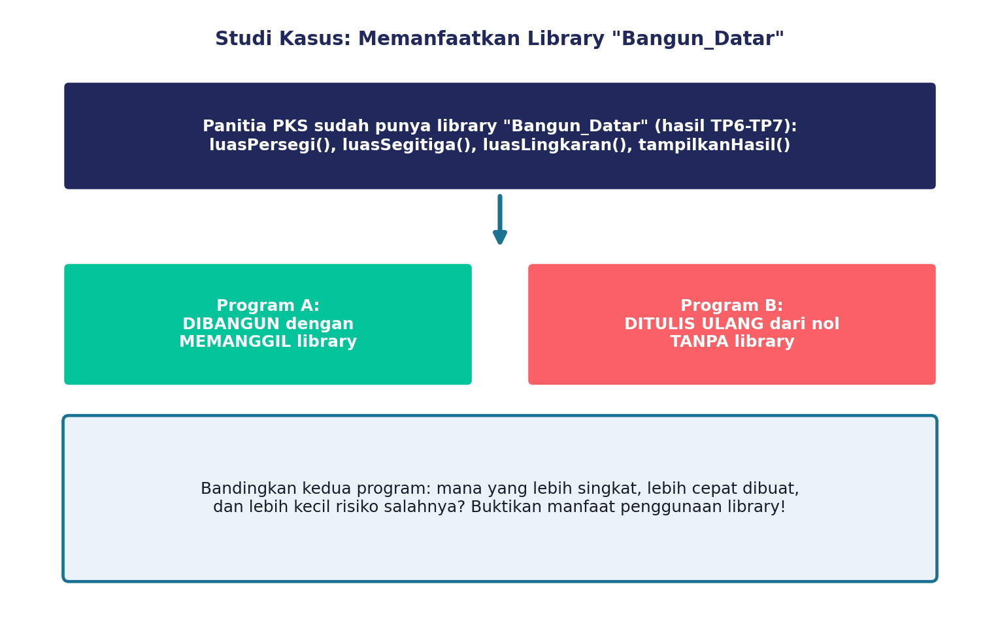

Di dua materi sebelumnya, kita udah belajar dekomposisi, modularisasi, sampai akhirnya berhasil bikin library sendiri namanya "Bangun_Datar" — isinya modul-modul kayak luasPersegi(), luasSegitiga(), luasLingkaran(), dan tampilkanHasil().
Nah, sekarang pertanyaannya: SERU nggak sih sebenernya PAKAI library itu? Beneran ngebantu, atau cuma buang-buang waktu bikinnya doang?
Yuk, kita BUKTIKAN sendiri lewat percobaan!
Dua Jenis Library yang Bisa Kamu Pakai
Sebelum eksperimen, kenalan dulu sama dua jenis library yang ada di pemrograman visual blok:

Library Standar itu...
blok-blok yang UDAH ADA bawaan aplikasi, kayak move steps, repeat, if-then di Scratch, atau kategori Logika/Loop/Matematika di Blockly. Tinggal pakai, nggak perlu bikin sendiri!
Library Eksternal itu...
library yang KAMU BIKIN SENDIRI, kayak library Bangun_Datar hasil kerja keras kita di TP 6-7. Keren, kan?
Yuk, Bandingkan: Pakai Library vs Nggak Pakai
Bayangin kamu mau bikin program "Kalkulator Luas Bangun Datar" lagi. Ada dua cara:
- Cara 1: PANGGIL aja modul dari library Bangun_Datar yang udah ada.
- Cara 2: TULIS ULANG semua rumus dari nol, kayak nggak pernah bikin library sebelumnya.

Waktunya Eksperimen!

Bareng kelompokmu, kamu bakal coba dua-duanya: bikin program yang MEMANGGIL library, dan bikin program yang DITULIS ULANG tanpa library. Terus, catat datanya:
- Berapa banyak baris/blok kode yang dipakai?
- Berapa lama waktu yang dibutuhkan buat menyelesaikannya?
- Berapa kali terjadi kesalahan selama mengerjakan?
Dari data itu, kita bisa BUKTIKAN sendiri — bukan cuma percaya kata guru — apakah library beneran bermanfaat! Tulis jawabanmu di LKPD yang dibagikan gurumu, ya.
Kenapa Sih Library Bikin Beda Banget?
Reusability
Modul yang udah ada tinggal dipanggil lagi, nggak perlu nulis ulang dari awal.
Abstraction
Kamu cukup manggil modulnya, nggak perlu mikirin detail rumit di baliknya lagi.
Efficiency
Karena pakai kode yang udah teruji, program selesai lebih cepat dan lebih kecil kemungkinan errornya.
Nambahin Modul Baru ke Library
Selain manggil modul yang udah ada, kamu juga bisa lho NAMBAHIN modul baru ke library yang udah kamu punya! Misalnya, mau nambahin modul kelilingPersegi() atau kelilingLingkaran() ke library Bangun_Datar. Makin lama, library kamu bakal makin lengkap dan makin berguna.
Kuis Interaktif
1. Blok "repeat 10" dan "if-then" pada Scratch adalah contoh dari...
2. Library "Bangun_Datar" yang kita kembangkan sendiri di TP 6-7 termasuk contoh dari...
3. Menurutmu, kenapa program yang MEMANGGIL library biasanya punya lebih sedikit kesalahan (error) dibandingkan yang ditulis ulang dari nol? Jelaskan alasanmu dalam 1-2 kalimat!
Rangkuman Kilat
- Library Standar = blok bawaan aplikasi (Scratch/Blockly), tinggal pakai.
- Library Eksternal = library yang kita kembangkan sendiri, seperti Bangun_Datar.
- Program yang MEMANGGIL library biasanya lebih singkat, lebih cepat, dan lebih kecil risiko salahnya dibanding menulis ulang dari nol.
- Manfaat library: reusability, abstraction, dan efficiency — sudah terbukti lewat percobaan kita sendiri!
Refleksi Diri
Sebelum lanjut ke materi berikutnya, coba jawab dulu: